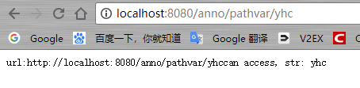
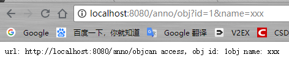
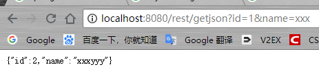
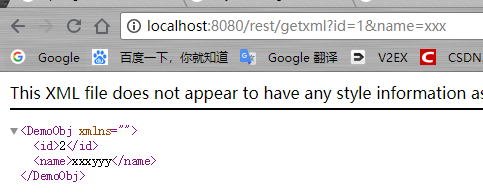
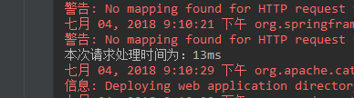
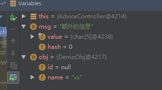
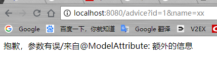

<未完待续 >
SpringMVC概述
首先说说什么是MVC，它和三层架构的关系：
- MVC：Model + View + Controller (数据模型+视图+控制器)。
- 三层架构：Presentation tier + Application tier + Data tier (展现层+应用层+数据访问层)。
实际上MVC只存在三层架构的展现层，M是数据模型，是包含数据的对象 。在SpringMVC里有一个专门的类叫Model，用来和V之间进行数据交互、传值；V指的是视图页面，包含JSP、freeMarker、Velocity、Thymeleaf、Tile等；C是控制器(SpringMVC的注解@Controller的类)。
而三层架构是整个应用的架构，是由Spring框架负责管理的。一般项目结构中都有Service层、DAO层，这两个反馈在应用层和数据访问层。
SpringMVC的常用注解
SpringMVC常用以下几个注解：
@Controller
该注解在类上，表明这个类是Spring MVC里的Controller，将其声明为Spring的一个Bean，Dispatcher Servlet会自动扫描注解了此注解的类，将Web请求映射到注解了@RequestMapping的方法上。在声明普通Bean的时候，使用@Component、@Service、@Repository和@Controller是等同的，因为后面三个都组合了@Component元注解；但在Spring MVC声明控制器Bean的时候只能使用@Controller。
@RequestMapping
该注解是用来映射Web请求(访问路径和参数)、处理类和方法的。@RequestMapping可注解在类和方法上。注解在方法上的@RequestMapping路径会继承注解在类上的路径，@RequestMapping支持Servlet的request和response作为参数，也支持对request和response的媒体类型进行配置。
@ResponseBody
该注解支持将返回值放在response体内，而不是返回一个页面。在很多基于Ajax的程序的时候，可以以此注解返回数据而不是页面；此注解可放置在返回值前或者方法上。
@RequestBody
该注解允许request的参数在request体中，而不是直接链接在地址后面。此注解放置在参数前。
@PathVariable
该注解用来接收路径参数，如/news/001，可接收001作为参数，此注解放置在参数前。
@RestController
该注解是一个组合注解，组合了@Controller和@ResponseBody，所以在只开发一个和页面交互数据的控制时，需要使用此注解。若没有此注解，想要实现上述功能，则需要在代码中加@Controller和@ResponseBody两个注解。
接下来实现一个各种注解使用的示例。
首先在pom.xml添加jackson依赖，获得对象和json或xml之间的转换：
1 | <dependency> |
然后实现用来演示获取request对象参数和返回此对象到response：
1 | package cn.yhc.highlight_springmvc4.domain; |
注解演示控制器：
1 | package cn.yhc.highlight_springmvc4.web.ch4_3; |
上面提到也可以使用@RestController注解进行演示：
1 | package cn.yhc.highlight_springmvc4.web.ch4_3; |
最后运行项目，对部分实现进行验证：




Spring MVC基本配置
Spring MVC的定制配置需要继承WebMvcConfigurerAdapter类，并在此类使用@EnableWebMvc注解，来开启对Spring MVC的配置支持，这样就可以重写这个类的方法，完成常用配置。
首先，将刚才的配置类继承WebMvcConfigurerAdapter类：
1 | package cn.yhc.highlight_springmvc4; |
拦截器配置
拦截器(Interceptor)实现对每个请求处理前后进行相关的业务处理，类似Servlet的Filter。可以让普通的Bean实现HandlerInterceptor接口或者继承HandlerInterceptorAdapter类来实现自定义拦截器，然后通过重写WebMvcConfigurerAdapter配置类的addInterceptors方法来注册自定义拦截器。解析来演示一个简单的拦截器的开发和配置，计算每一次请求的处理时间。
示例拦截器：
1 | package cn.yhc.highlight_springmvc4.interceptor; |
在配置类中增加重写的addInterceptors方法：
1 | //配置拦截器的Bean |
运行结果如下图所示：

@ControllerAdvice
通过该注解可以将对于控制器的全局配置放在同一个位置，注解了@Controller的类的方法可以使用@ExceptionHandler、@InitBinder、@ModelAttribute注解到方法上，这对所有注解了@RequestMapping的控制器内的方法有效。
- @ExceptionHandler：用于全局处理控制器里的异常。
- @InitBinder：用来设置WebDataBinder，WebDataBinder用来自动绑定前台请求参数到Model中。
- @ModelAttribute：该注解本来的作用是绑定键值对到Model中，此处演示让全局的@RequestMapping都能获得在此处设置的键值对。
接下来演示一个使用@ExceptionHandler处理全局异常。
定制ControllerAdvice：
1 | package cn.yhc.highlight_springmvc4.advice; |
为了区分之前的控制器，这里新建演示控制器：
1 | package cn.yhc.highlight_springmvc4.web.ch4_3; |
需要一个error.jsp用作异常展示界面：
1 | <%@ page contentType="text/html;charset=UTF-8" language="java" %> |
可以分析一下请求流程，首先运行项目，通过浏览器访问 http://localhost:8080/advice?id=1&name=xx ，可以看到请求参数中有id和name两个，因为在控制建言类中使用了@InitBinder注解定制的initBinder方法，忽略了id这个参数，所以会造成参数有误这个异常。
结果如下图所示：

